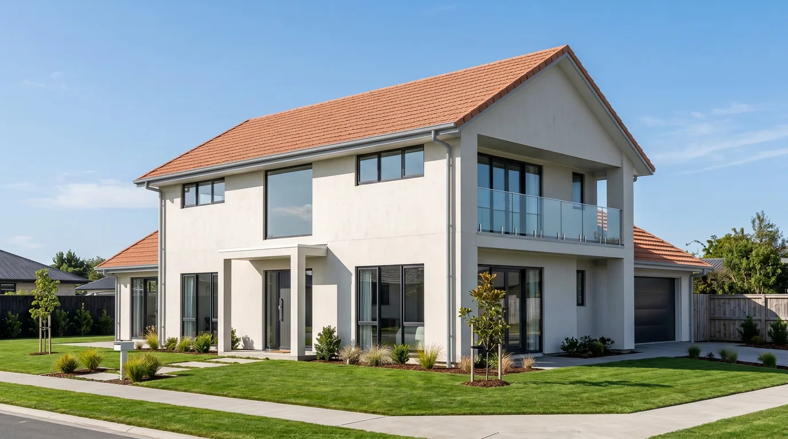
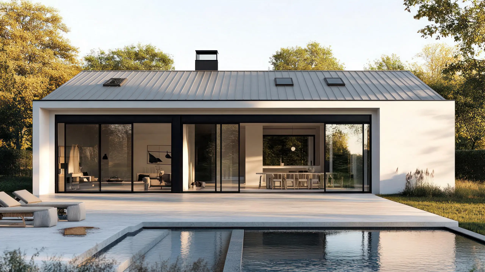
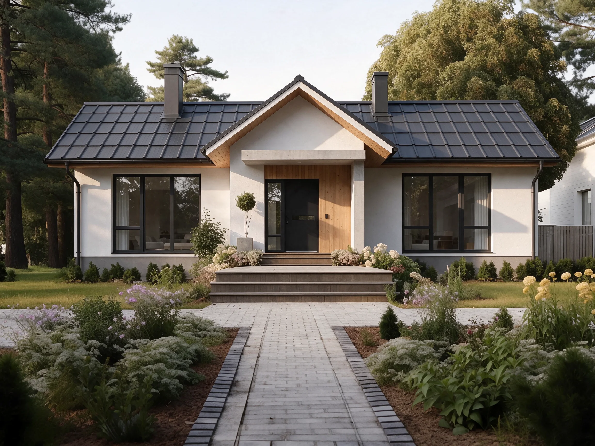

Выберите объект для расчёта
Подберите сочетание цветов кровли, фасада или забора на готовых моделях.

Кровля • Фасад • Водосток
КЛАССИЧЕСКИЙ ДОМ
Двускатная кровля и фасад с наружной водосточной системой.

Кровля • Фасад
ДОМ В СТИЛЕ МОДЕРН
Фальцевая кровля со скрытым водоотводом и панорамным остеклением.

Кровля • Фасад
ДОМ В СТИЛЕ БАРНХАУС
Асимметричная фальцевая кровля и лаконичный фасад.

Профиль • Цвет
МЕТАЛЛОЧЕРЕПИЦА
Сравнение модульных профилей Морено, Германо и Нордо в разных цветах.

Скоро
ЗАБОРЫ • ЖАЛЮЗИ
Металлоштакетник, жалюзи и профнастил в цвет вашей кровли.
В разработке